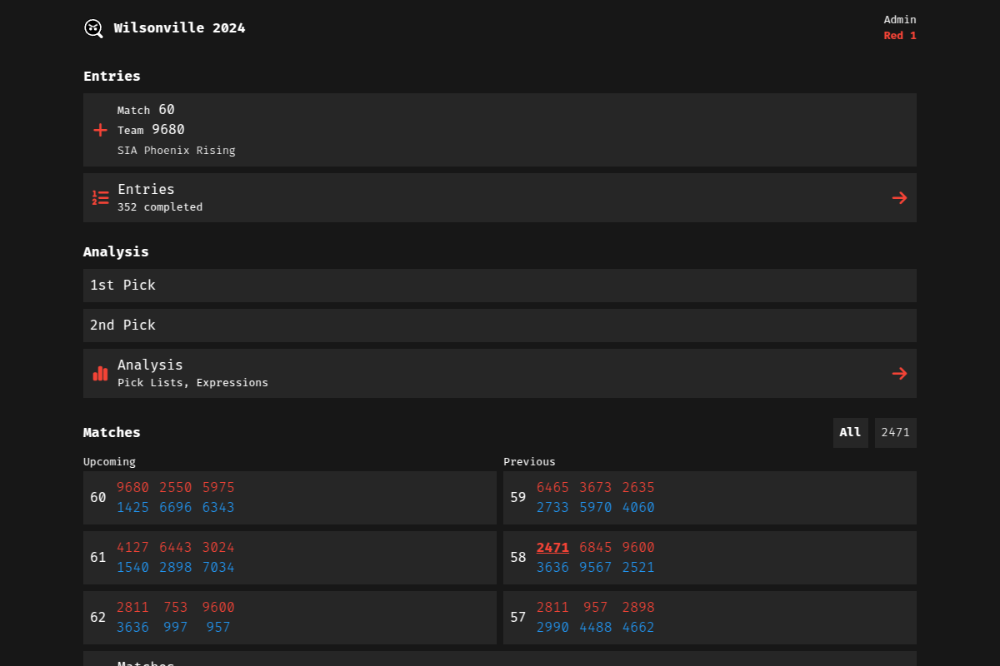

I am actively looking for work.
I worked on a system for managing concrete mixer trucks, employees, shifts, and notifications.
I was a part-time cashier and courtesy clerk.
I signed people up for the Summer Reading Program, logged hours, and issued prizes.
I've been in FIRST Robotics for almost 10 years; it's been an important part of my life. Most of my interest in web development was formed through robotics, especially as a member of Team Mean Machine.
I am introducing student members to web development concepts through engaging projects.
We use MeanScout to scout other teams during competitions; recording, analyzing, and visualizing data in an all-in-one app. Recent improvements include:


Created app for robot performance data collection - Svelte, PWA
Team website maintenance - WordPress
Not listed here are the endless hours spent googling, searching StackOverflow, and RTFM.
Graduated w/ 3.77 GPA
Student Record Manager
- PHP, MySQL, CRUD, Bootstrap
I also
recreated this project
in Go/templ.
JSludge - PHP, MySQL
Friends of the White Salmon River redesign
- WordPress, Figma (group project)

Washougal Family Dental front page redesign - HTML, CSS, Bootstrap
NYT Feed App
- JS, NY Times API, Bootstrap

Weather App - JS, OpenWeather API
Markdown to HTML converter - Python CLI script
Graduated w/ 3.8 GPA
Pymonitor - Python CLI script
The Camasonian maintenance - WordPress (2020-2021)